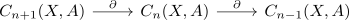

Randabbildung als Komplex
Satz
Sei $(X, \mathcal{T})$ ein topologischer Raum und $A$ ein Ring $C_{n}(X,A)$ die Menge der singuläre n-Kette mit Koeffizienten aus $A$, dann ist

ein Kettenkomplex, d.h. $\partial^2 = 0$
Beweis
o.B.d.A. für $\partial \circ \partial (1 \cdot f) = 0$, der allgemeine fall folgt aus der Linearität von der Randabbildung (nach Konstruktion) Dabei gilt
\begin{align*}
\partial(f) =& \sum_{j=0}^{n+1} (-1)^j \cdot (f \circ \sigma_{n+1}^{(j)}) \\
\partial(f \circ \sigma_{n+1}^{(j)}) =& \sum_{l=0}^{n} (-1)^l \cdot (f \circ \sigma_{n+1}^{(j)} \circ \sigma_{n}^{l})
\end{align*}
Somit folgt
\begin{align*}
\partial (\partial (f)) =& \sum_{j=0}^{n+1} (-1)^j \cdot \partial (f \circ \sigma_{n+1}^{(j)}) \\
=& \sum_{j=0}^{n+1} \sum_{l=0}^{n} (-1)^{j+l} (f \circ \sigma_{n+1}^{(j)} \circ \sigma_{n}^{(l)}) \\
\end{align*}
Da gilt für $j \leq l$
\begin{align*}
\sigma_{n+1}^{(j)} \circ \sigma_{n}^{l} =& \sigma_{n+1}^{(l+1)} \circ \sigma_{n}^{(j)} \\
=& \left((x_0,...,x_{n-1} \mapsto (x_0,...,x_{j-1},0,x_{j},...,x_{l-1},0,...,x_l,...,x_{n-1})\right) & \mbox{if } j \leq l \\
\end{align*}
Daraus resultiert
\begin{align*}
\partial^2 (f)) =& \sum_{\substuck{j \leq l \\ j = 0,...,n + 1 \\ l = 0,...,n}} (-1)^{j+l} (f \circ \sigma_{n+1}^{(j)} \circ \sigma_{n}^{(l)}) + \sum_{\substuck{j > l \\ j = 0,...,n+1 \\ l = 0,...,n}} (-1)^{j+l} (f \circ \sigma_{n+1}^{(j)} \circ \sigma_{n}^{(l)}) \\
=& \sum_{j \leq l} (-1)^{j+l} (f \circ \sigma_{n+1}^{(l+1)} \circ \sigma_{n}^{(j)}) + \sum_{j > l} (-1)^{j+l} (f \circ \sigma_{n+1}^{(j)} \circ \sigma_{n}^{(l)}) \\
\end{align*}
Durch einen Indexshift bei der ersten Summe von $l \leadsto l -1$ und eine Indexvertauschung bei der zweiten Summe erhalten wir
\begin{align*}
\partial^2 f =& \sum_{j < l} \sum_{\substuck{j < l \\ l = 0,...,n+1 \\ j = 0,...,n}}^{} (-1)^{j + l - 1} (f \circ \sigma_{n+1}^{(l)} \circ \sigma_{n}^{(j)}) + \sum_{\substuck{j < l \\ l = 0,...,n+1 \\ j = 0,...,n}}^{} (-1)^{j+l} (f \circ \sigma_{n+1}^{(l)} \circ \sigma_{n}^{(j)} \\
=& 0
\end{align*}